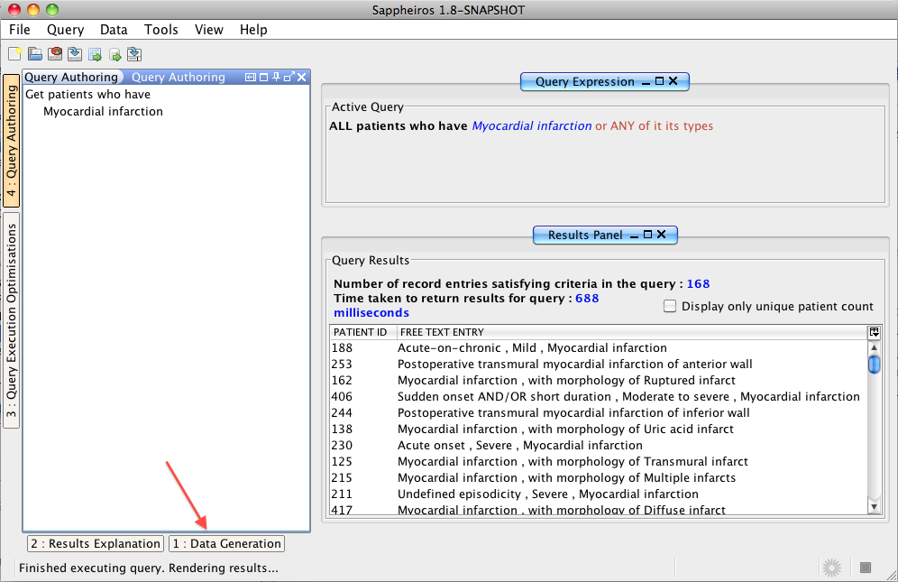
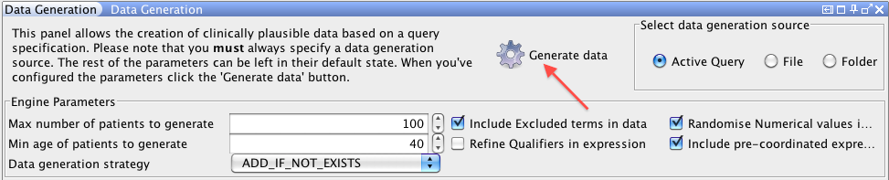

SNOMED CT, Java and MySQL are registered trademarks
This task describes the steps for generating new clinically plausible data using Snofyre's data generation engine. For more information on Snofyre's data generation engine, please refer to Data Generation Considerations. Snofyre's data generation engine is capable of generating data that conforms to a given query. For example, to generate patient records containing different types of diabetes entries, you have to create a query containing diabetes as the criterion. However, instead of executing it, you use it to generate data.
Tip:
Data generation in Snofyre is generally a slow running process, because of a large amount of
randomisation features that it uses for creating data. During data generation, Snofyre also
uses UUIDs to verfiy and update its underlying index tables, both of which take time.
So, we do not recommend generating large volumes (in thousands) using Snofyre.
- Create a query to which data needs to conform to.
-
Click the Data Generation Tab at the bottom left of the
Snofyre interface as shown below.

This displays the previously minimised Data Generation Panel as shown in the figure below.
-
Click the Generate Data button as shown below.

This generates data conforming to the query specified in the previous step, using the settings specified for Snofyre's data generation engine.Tip: You can specify configure Snofyre's data generation engine, using the other controls in the panel. `For exampple, you can specify how new record entries are added by setting the Data Generation Strategy.